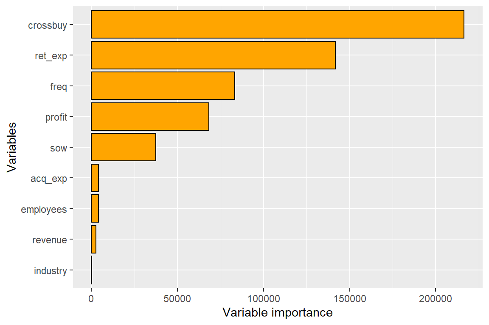
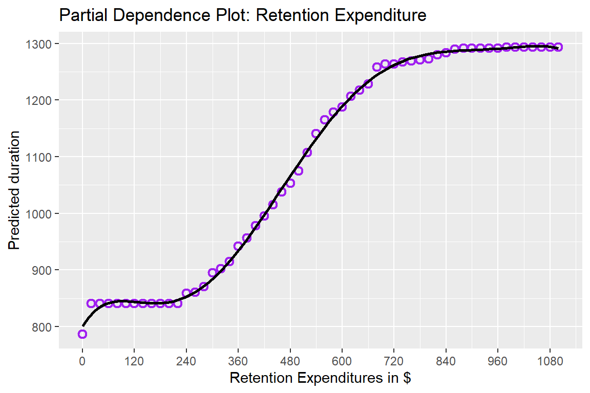
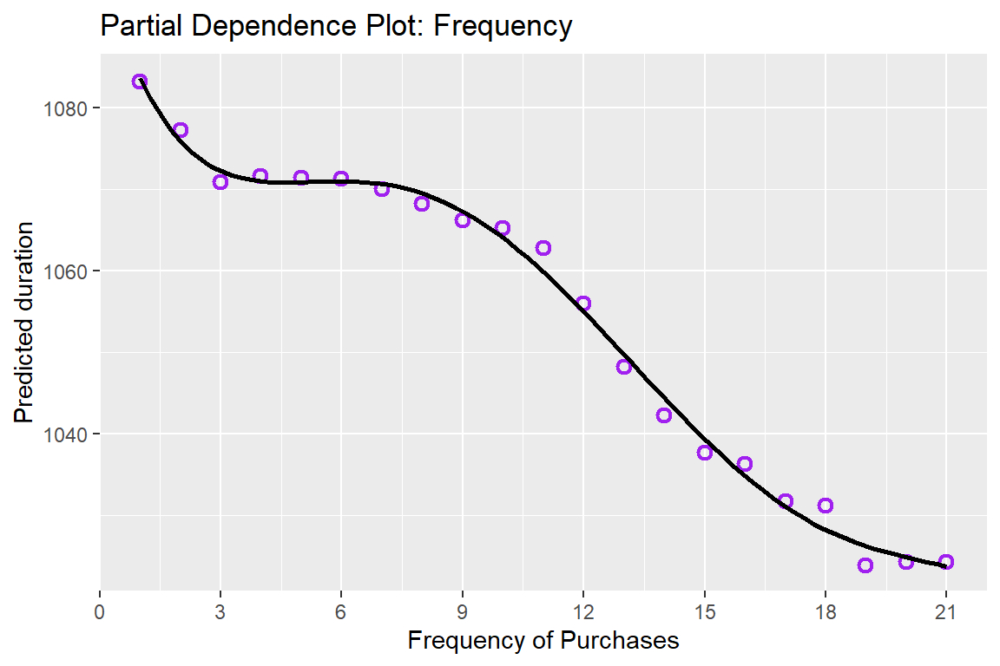
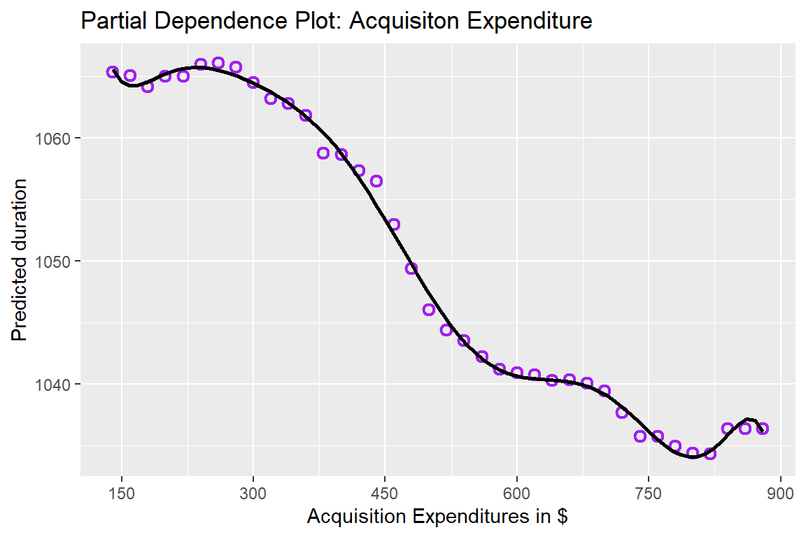

| Model | Accuracy | Sensitivity | Specificity |
|---|---|---|---|
| Logistic Regression | 0.74 | 0.897 | 0.406 |
| SVM | 0.75 | 0.897 | 0.438 |
| Random Forest | 0.75 | 0.912 | 0.406 |
| Random Forest Full Data Set | 0.95 | 0.982 | 0.883 |
DA 6813 Case Study 4 Customer Retention
1 Executive Summary
This analysis focused on predicting customer acquisition and retention to optimize marketing strategies and resource allocation. Using the acquisitionRetention dataset, three models—Logistic Regression, Support Vector Machines (SVM), and Random Forest—were evaluated to classify prospects as “acquired” or “not acquired.” Random Forest emerged as the best-performing model, achieving the highest sensitivity (91.2%) and balanced accuracy in the acquisition task, demonstrating its reliability in identifying prospects likely to convert into customers. When applied to the full dataset, Random Forest achieved an impressive accuracy of 95%, with high sensitivity (98.2%) and specificity (88.3%).
For retention prediction, Random Forest was again employed to forecast customer duration, leveraging post-acquisition variables such as retention expenditures, purchase frequency, and cross-category buying behavior. Retention expenditures were identified as the most significant predictor, though a diminishing return effect was observed, suggesting the need to optimize spending.
Key recommendations include exploring additional external factors, refining spending thresholds for retention efforts, and evaluating advanced ensemble techniques to further enhance predictive accuracy. These insights provide actionable guidance for improving customer acquisition and retention strategies, enabling more efficient resource allocation and sustained business growth.
2 Problem Statement
In today’s competitive market, managing customer acquisition and retention is crucial for maintaining long-term business success. Companies face the dual challenge of predicting which current customers are at risk of ending their relationship and identifying new customers likely to join. Accurate predictions enable firms to allocate resources effectively, targeting at-risk customers with retention strategies and high-potential prospects with acquisition incentives. This study aims to develop predictive models using the acquisitionRetention dataset to forecast customer acquisition and retention, specifically focusing on the likelihood of acquisition and the duration of customer relationships. The analysis will involve building and evaluating models such as Random Forest, Decision Trees, and Logistic Regression to identify significant predictors and improve model performance. Insights gained from this analysis will help optimize marketing strategies, reduce campaign costs, and maximize the efficient use of firm resources.
3 Additional Sources
Random forests are particularly well-suited for customer acquisition and retention analysis due to their ability to handle complex, non-linear relationships and interactions between variables. Unlike traditional linear models, random forests can automatically capture intricate patterns in customer behavior without requiring explicit specification of these relationships. This capability is crucial when predicting customer retention and acquisition, as it allows the model to identify subtle, high-order interactions between demographic, behavioral, and transactional features that influence customer decisions. Additionally, random forests provide variable importance measures, which help businesses understand the key drivers of customer churn and acquisition, enabling more targeted marketing strategies (Breiman, 2001). The robustness of random forests against overfitting, even in the presence of noisy data, further enhances their reliability in dynamic and uncertain market environments, making them an ideal choice for optimizing customer relationship management.
Breiman, L. (2001) Random Forests. Machine Learning, 45, 5-32. http://dx.doi.org/10.1023/A:1010933404324
4 Data Exploration and Preprocessing
The acquisitionRetention dataset is designed to address two key prediction tasks: (1) identifying which prospects are likely to be acquired and (2) forecasting the retention duration for acquired customers. To meet the requirements of these tasks, different subsets of variables are selected to ensure data integrity and prevent leakage.
To prepare the data for modeling, we normalized numeric variables when applying SVM and Logistic Regression to ensure comparability and improve model performance. However, for Random Forest, the raw data was used, as this model is not sensitive to feature scaling.
4.0.1 Variables Used to Predict Customer Acquisition
For the customer acquisition task, only variables available prior to acquisition were used to avoid data leakage. Post-acquisition variables, such as duration and profit, were excluded because they rely on outcomes that would not be known at the time of prediction. The following variables were used:
acq_exp: Total dollars spent on acquiring a prospect.industry: Indicates whether the prospect operates in the B2B sector.revenue: Annual sales revenue of the prospect’s firm.employees: Number of employees in the prospect’s firm.
Initially, acq_exp_sq (the square of acquisition expenditure) was included to capture potential non-linear effects. However, this variable was removed after analysis showed no significant non-linear relationship with acquisition outcomes.
These selected variables reflect the financial and business characteristics of each prospect, along with the firm’s investment in acquisition efforts. They provide relevant and actionable insights into the likelihood of acquiring a customer while maintaining the model’s validity and interpretability.
5 Methodology
To conduct the analysis, we evaluated three models—Logistic Regression, Support Vector Machines (SVM), and Random Forest—to classify prospects as “acquired” or “not acquired,” using pre-acquisition variables such as acq_exp, industry, revenue, and employees to avoid data leakage. The dataset was split into training and testing sets, and numeric variables were normalized for SVM and Logistic Regression, while Random Forest was applied to the raw data due to its robustness to scaling. Each model’s performance was assessed using accuracy, precision, recall, and AUC-ROC. Logistic Regression’s assumption of linearity and independence among predictors, as well as SVM’s reliance on normalized inputs and computational demands, limited their suitability for this task. Random Forest outperformed the other models, excelling in handling non-linear relationships, multicollinearity, and interactions, making it the preferred acquisition model. The Random Forest model was then applied to the full dataset to identify acquired customers, creating a subset for the retention task. For retention modeling, Random Forest was used again, leveraging its ability to capture complex relationships and interactions among behavioral and post-acquisition variables such as freq, crossbuy, and ret_exp. Model performance for retention was evaluated using Mean Absolute Error (MAE). This approach ensured that the methods were tailored to the task requirements, addressing model assumptions and limitations while maintaining interpretability.
6 Findings
The analysis of customer acquisition and retention utilized Logistic Regression, Support Vector Machines (SVM), and Random Forest models to classify prospects as “acquired” or “not acquired” and to predict retention duration for acquired customers.
6.0.0.1 Customer Acquisition Findings
Random Forest demonstrated superior performance in predicting acquisition outcomes compared to Logistic Regression and SVM. While all models achieved comparable accuracy of 74%–75%, Random Forest excelled with the highest sensitivity (91.2%) and balanced accuracy (66.73%), indicating its robustness in identifying acquired customers. SVM and Logistic Regression performed similarly, with sensitivity scores of 89.7%, though their specificity (40.6%–43.8%) was lower than desired. Random Forest’s ability to handle multicollinearity and non-linear relationships, combined with its interpretability via variable importance measures, solidified its position as the optimal model for acquisition predictions.
Applying the Random Forest model to the full dataset yielded an accuracy of 95%, sensitivity of 98.2%, and specificity of 88.3%, reinforcing its reliability in a real-world application. These results were used to identify the subset of customers predicted to be acquired, which formed the basis for the retention analysis.
6.0.0.2 Customer Retention Findings
The retention duration prediction was conducted using a Random Forest regression model. Key variables influencing retention included ret_exp (retention expenditures), freq (purchase frequency), and crossbuy (number of product categories purchased). Retention expenditures emerged as the most important predictor, with Partial Dependence Plots (PDPs) revealing a diminishing return effect: after a certain expenditure level, further increases had minimal impact on retention duration.
Performance metrics for the retention model indicated robust predictions, with a Root Mean Square Error (RMSE) of 50.89 and a Mean Absolute Error (MAE) of 37.33. While the Mean Absolute Percentage Error (MAPE) was high, this can be attributed to the variability in customer retention durations, underscoring the importance of nuanced insights from the model rather than solely relying on error metrics.




| Metric | Value |
|---|---|
| RMSE | 50.888 |
| MAE | 37.332 |
| ME | -14.458 |
| MAPE | 3021.005 |
7 Conclusion
This analysis provided valuable insights into customer acquisition and retention, leveraging predictive models to inform data-driven strategies. Random Forest emerged as the most effective model for both acquisition and retention predictions, demonstrating superior performance in handling complex, non-linear relationships and providing interpretable results through variable importance measures.
Key findings include the importance of retention expenditures, purchase frequency, and cross-category buying as significant predictors of customer duration. However, the diminishing returns observed in retention expenditures suggest that firms should optimize spending thresholds to maximize cost efficiency. Additionally, the application of Random Forest to classify acquisition outcomes yielded high accuracy and sensitivity, making it a reliable tool for identifying prospects likely to convert into customers.
8 Appendix
In addition to the primary analyses detailed in the main report, several exploratory and supporting methods were performed to validate conclusions and refine insights. These methods, documented in the attached sandbox file, include:
- Correlation Analysis:
- A correlation matrix was used to explore relationships among variables, identifying potential multicollinearity issues. This analysis informed variable selection and preprocessing steps for models like Logistic Regression and SVM, ensuring robust inputs.
- Exploratory Analysis:
- Initial data exploration involved visualizations to understand distributions and relationships among variables. These insights, referenced in the sandbox file, helped highlight key data characteristics such as the skewed retention durations and the variability in acquisition expenditures.
- Testing Alternative Models:
- Several models, including Decision Trees and basic linear models, were tested for comparative purposes. While these models were not selected for the final analysis, their performance helped confirm the reliability of the chosen methods and supported the final conclusions.
These additional analyses, as documented in the sandbox file, provided valuable context and helped validate the predictive models and findings. They reflect the rigor of the analytical approach and the effort to ensure robust, actionable insights.